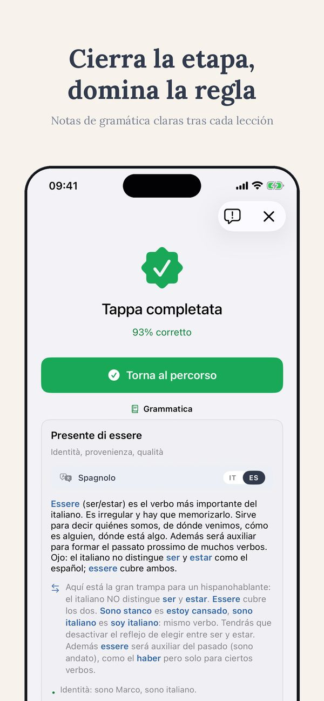

Clases online · Thuis Italiaans
Cómo elegir un profesor de italiano online
Las plataformas muestran miles de perfiles. El precio y una foto sonriente no dicen casi nada. Aquí van las siete preguntas que sí dicen algo, de un profesor que también lee esos perfiles.
La primera clase de prueba es gratis, online desde donde estés
Reservar una clase de prueba gratisDemasiada oferta también es un problema
Busca un profesor de italiano online y aparecen miles de perfiles, ordenados por un algoritmo, filtrados por precio. Las fotos sonríen, los vídeos de presentación son cálidos, las reseñas tienen cinco estrellas casi en todas partes, porque los alumnos descontentos se van en silencio en vez de escribir reseñas. Entonces, ¿cómo se elige de verdad?
Empieza por soltar una idea: que un hablante nativo es automáticamente un profesor. Tú hablas tu lengua materna a la perfección. ¿Podrías explicar, ahora mismo, por qué su gramática funciona como funciona, a un adulto perdido, con palabras sencillas? Hablar una lengua y enseñarla son dos oficios distintos. Las preguntas de abajo sirven para distinguirlos. Y ojo con una trampa específica del español: como el italiano se parece tanto, mucha gente cree que no necesita método. Los falsos amigos dicen lo contrario.
Las 7 preguntas
1. ¿Enseñar italiano es su profesión o un extra? Existen titulaciones reales para enseñar italiano a extranjeros: DITALS, CEDILS y los másteres ITALS completos. No es elitismo. La formación cambia lo que pasa en el momento en que te atascas: un profesor formado reconoce por qué te atascas y tiene tres salidas, no una.
2. ¿Evalúa antes de enseñar? Una buena primera clase es sobre todo escuchar: tu nivel, tu objetivo, tu historia con los idiomas. Una mala primera clase es la venta de un paquete. Mientras nadie haya situado tu punto de partida, cualquier plan es una suposición.
3. ¿Sabe explicar el porqué, en una lengua que entiendes? En A1 y A2 a veces necesitas la gramática explicada con claridad, en español si hace falta. “Lo irás absorbiendo de forma natural” es un método para niños con años por delante, no para un adulto con tres horas a la semana.
4. ¿Las clases tienen un hilo? Cada clase debería apoyarse en la anterior. Pregunta cómo registra lo que hicisteis, en qué fallaste, qué viene después. Si cada clase empieza de cero, estás pagando cincuenta primeras clases.
5. ¿Qué pasa entre clase y clase? Los seis días entre dos clases deciden tu velocidad más que la clase misma. Un profesor serio tiene la respuesta preparada: deberes salidos de tus errores, ejercicios, lectura graduada por nivel, una app que continúa el recorrido.
6. ¿El material se adapta a ti? Italiano para viajar, italiano para la ciudadanía, italiano para el trabajo: son cursos distintos. Si todos los alumnos reciben el mismo PDF, eres el alumno número cuarenta, no una persona con un objetivo.
7. ¿Puedes probar antes de comprometerte? Una clase de prueba dice más que cincuenta reseñas. En la prueba, observa dos cosas: quién habla más, y si sales sabiendo tu nivel y tu siguiente paso.
Las señales de alarma
- Promesas con fecha. “Fluido en tres meses” es marketing, no lingüística. El progreso tiene una velocidad, y depende de las horas, no de los eslóganes.
- Ninguna pregunta sobre ti. Si la primera clase no contiene preguntas sobre tus objetivos, el curso estaba escrito antes de que llegaras.
- Solo charla, sin corrección. Una conversación agradable sin feedback es un intercambio de idiomas. Tiene su sitio, y en otros lugares es gratis.
- Ningún método visible entre clases. Si la respuesta a “¿qué hago hasta la semana que viene?” es encogerse de hombros, los seis días intermedios se pierden.
Cómo trabajo yo, por transparencia
Como esta página la escribo yo, debes saber desde dónde hablo. Tengo dos másteres específicamente en didáctica del italiano: el máster ITALS de la Università Ca' Foscari de Venecia para el italiano enseñado en el extranjero, y un máster de la Università Giustino Fortunato sobre el italiano como segunda lengua, con una tesis sobre la clase online. Enseño online y en persona desde 2019, desde los Países Bajos, con alumnos en varios husos horarios. Mis precios son públicos, la primera clase de prueba es gratis, y entre clase y clase mis alumnos usan la app Ti y los más de 700 ejercicios gratuitos de este sitio. Las clases se dan en italiano, con explicaciones en español sencillo, en inglés o en italiano fácil. Si después de la prueba crees que otra persona encaja mejor contigo, te diré qué buscar. Esta página es exactamente esa lista.
Pon a prueba las siete preguntas conmigo
Una clase de prueba gratis, online, sin compromiso. Sales sabiendo tu nivel y tu siguiente paso, estudies luego con quien estudies.
La primera clase de prueba es gratis, online desde donde estés
Reservar una clase de prueba gratisPreguntas frecuentes
¿Un hablante nativo es automáticamente mejor?
No. Un italiano nativo es necesario para los niveles altos, pero de A1 a B1 la destreza que más cuenta es explicar, y eso se entrena, no se hereda. Lo ideal es un profesor formado con un italiano nativo o casi nativo.
¿Cuánto cuestan las clases de italiano online?
En las plataformas, entre 10 y más de 60 euros por hora, y en el centro de esa horquilla el precio se relaciona poco con la calidad. Compara coste por progreso, no coste por hora: una clase estructurada con seguimiento sale más barata que dos charlas agradables.
¿Clases particulares o de grupo online?
La clase particular avanza más rápido por hora, porque hablas tú la mayor parte del tiempo. El grupo es más barato y añade un lado social. Un esquema que funciona bien: clases particulares más estudio diario por tu cuenta con una app o lecturas graduadas.
La clase de prueba responde a casi todo
Una clase gratis online: encontramos tu nivel, tu objetivo y un plan realista. Después decides, con mejor información que la de cualquier página de perfil.
La primera clase de prueba es gratis y sin compromiso
Reservar una clase de prueba gratis


Ti en acción
Recorrido MCER, ejercicios, edicola y clásicos italianos graduados — de A1 a C2, en 14 idiomas.



Más de Thuis Italiaans
Libros graduados por nivel · Clases de italiano en línea · Más de 700 ejercicios gratis